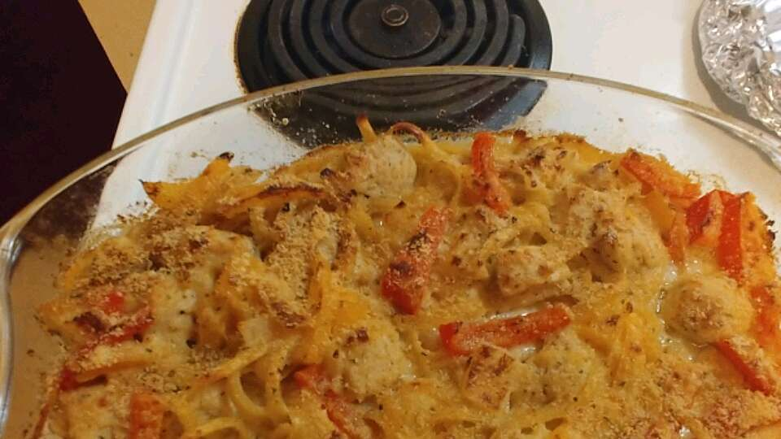

Cheesy and Creamy Chicken Tetrazzini

Description
Prep 35 mins
Cook 40 mins
Ingredients
- cooking spray
- .08 pound fettuccine pasta
- .17 pinch salt and ground black pepper to taste
- .17 pinch dried thyme, or to taste
- ⅙ teaspoon fresh thyme leaves
Steps
- Preheat oven to 350 degrees F (175 degrees C). Spray a casserole dish with cooking spray.
- Put clean leak tops in the bottom of a large pot. Place chicken on top and add bay leaf, garlic, dried plums, and 3 quarts water. Set over high heat until it starts to simmer. Reduce heat to medium-low or low and simmer gently, occasionally pushing the chicken under the liquid with tongs, for 1 hour 15 minutes.
- Meanwhile, prepare leek bottoms by trimming off the root ends and slicing them in half lengthwise. Turn leeks and cut crosswise into ½-inch slices. Transfer to a large bowl and fill with cold water so leeks are floating. Toss with your hands to loosen dirt. Grab leeks with your hands, shake gently to remove water, and transfer to another bowl. Place in the refrigerator until needed.
- Carefully lift chicken with two forks, let liquid drain from the cavity, and place it in a bowl. Separate meat from skin and bones. Tear meat into bite-sized pieces put in the refrigerator until needed.
- Place skin and bones back into the pot and gently simmer for 1 more hour.
- Spread half the cooked fettuccine pasta into bottom of prepared casserole dish, top with half the chicken and half the cream sauce. Repeat layers once more and sprinkle remaining 2 tablespoons Swiss cheese, 2 tablespoons Cheddar cheese, and 2 tablespoons Parmesan cheese over the top.
- Bake in the preheated oven until cheese topping is nicely browned, 25 to 30 minutes.
Main Page of Different Recipes